Pendampingan Belajar
Membantu anak membaca, menulis, berhitung, memahami instruksi, dan menyelesaikan tugas sekolah secara bertahap.
- Calistung
- Les privat SD
- Persiapan sekolah
Pendampingan belajar anak
Deva Course membantu anak belajar membaca, menulis, berhitung, mengaji, fokus, dan lebih percaya diri melalui pendampingan yang sabar dan bertahap.
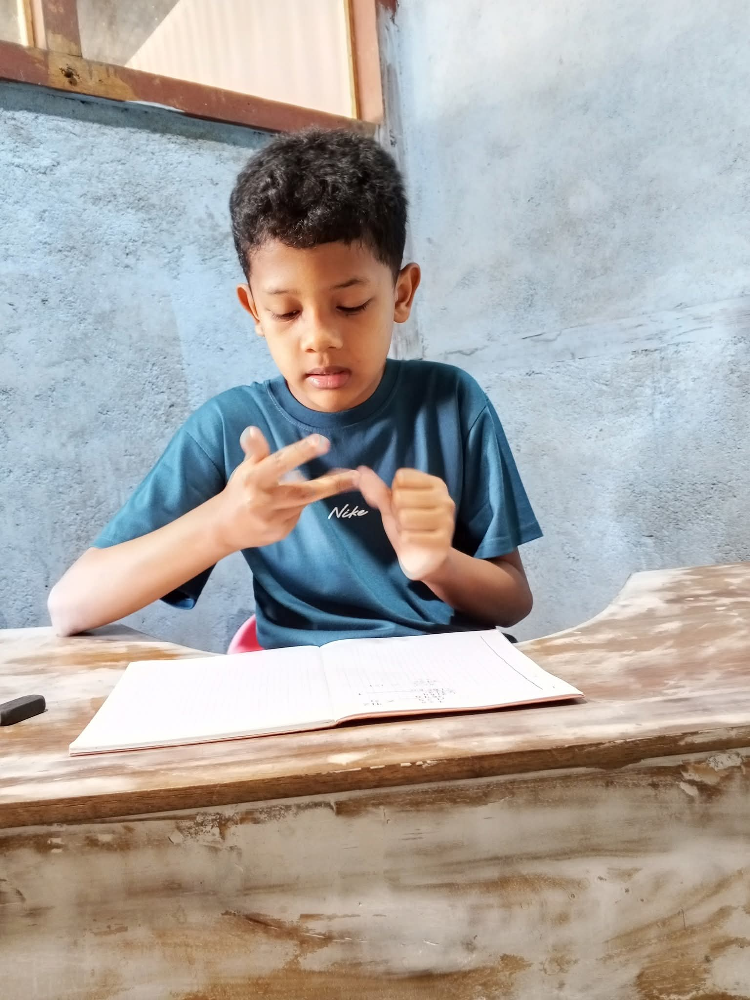
Tentang
Deva Course adalah tempat belajar dan pendampingan bagi anak-anak yang membutuhkan perhatian khusus dalam proses tumbuh kembang dan pendidikan.
Kami percaya bahwa setiap anak memiliki potensi yang luar biasa dan membutuhkan pendekatan belajar yang berbeda sesuai dengan kebutuhannya.
Dengan suasana belajar yang nyaman dan pendampingan yang penuh kesabaran, kami membantu anak berkembang secara akademik, sosial, emosional, dan spiritual.
Layanan Utama
Kami membantu anak melalui tiga area pendampingan utama yang saling mendukung: belajar, tumbuh kembang, dan pembiasaan spiritual.
Membantu anak membaca, menulis, berhitung, memahami instruksi, dan menyelesaikan tugas sekolah secara bertahap.
Aktivitas sensori, motorik, fokus, dan kemandirian untuk membantu anak lebih siap belajar dan beraktivitas sehari-hari.
Belajar mengaji dan BTQ dengan suasana yang nyaman, sabar, dan sesuai kemampuan anak.
Program
Program disusun agar anak merasa nyaman, orang tua lebih tenang, dan perkembangan anak dapat terlihat secara bertahap.
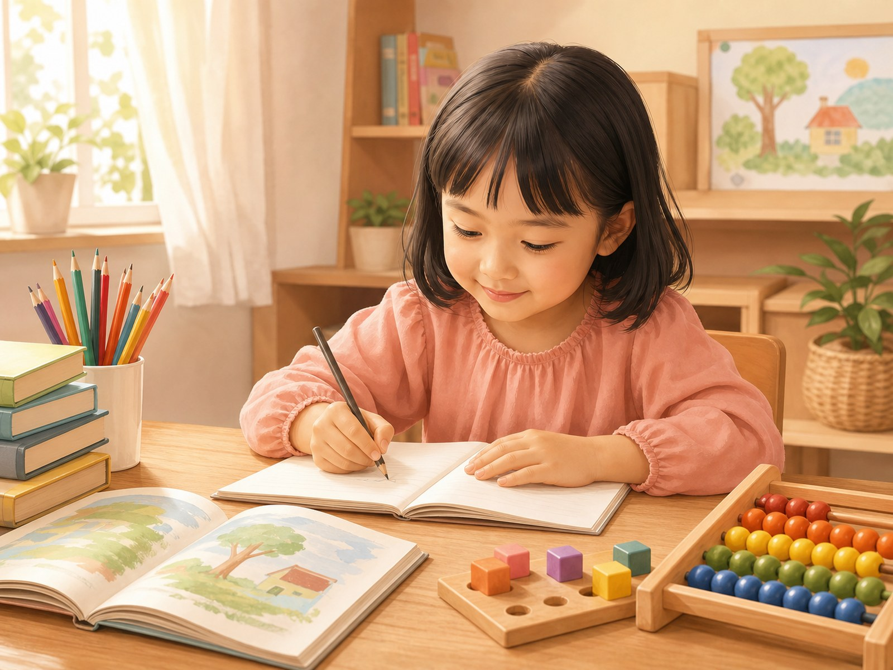
Membaca, menulis, dan berhitung dengan cara yang sabar, bertahap, dan menyenangkan.
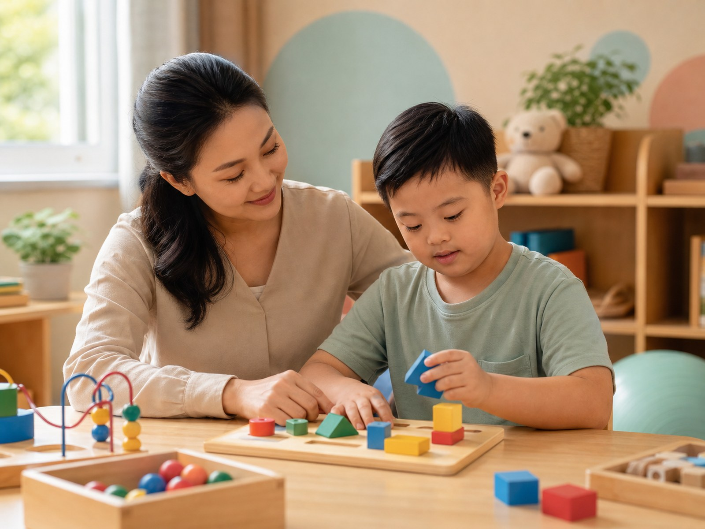
Pendampingan belajar sesuai kebutuhan, kemampuan, dan kondisi masing-masing anak.
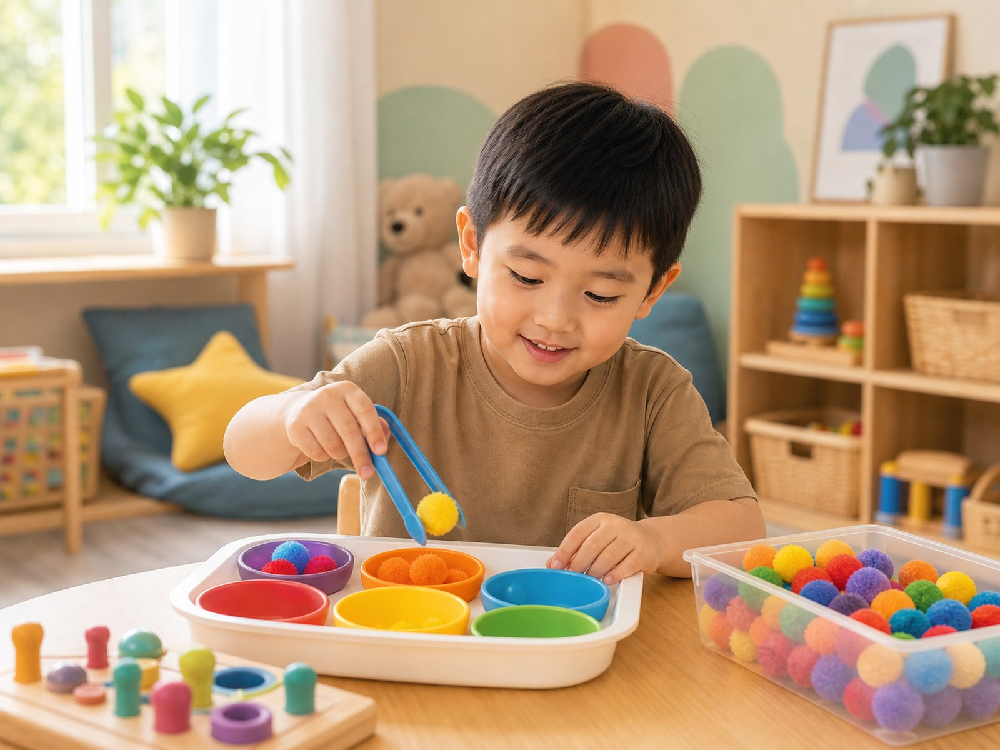
Aktivitas untuk membantu koordinasi gerak, motorik halus, dan kesiapan belajar anak.
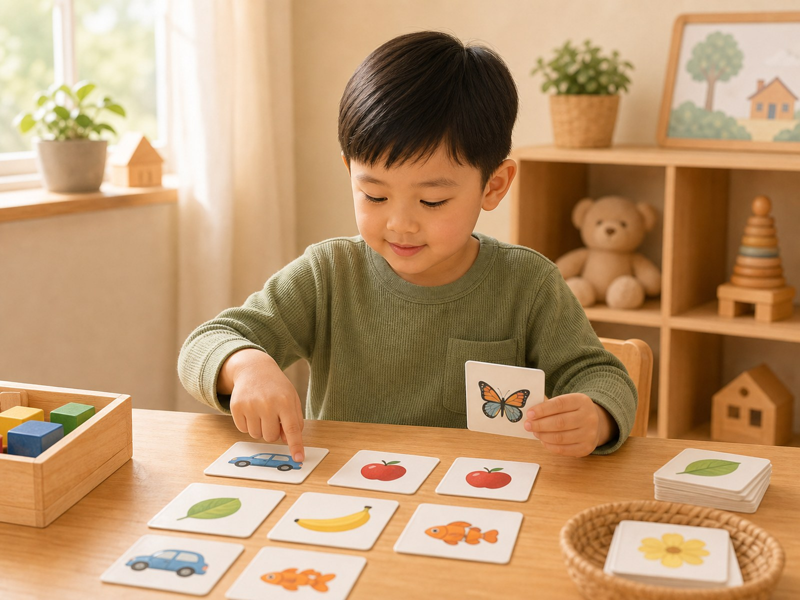
Membantu anak belajar lebih tenang, terarah, dan mampu menyelesaikan tugas.
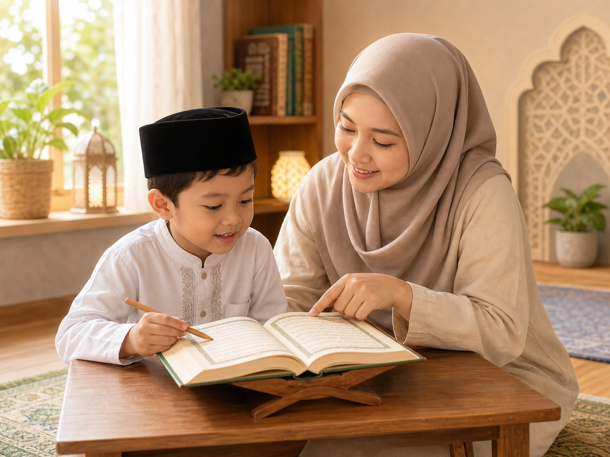
Pendampingan membaca Al-Qur'an dengan suasana yang nyaman dan penuh kesabaran.
Bantuan belajar pelajaran sekolah dasar sesuai kebutuhan dan ritme belajar anak.
Membantu anak mengenal rutinitas belajar, instruksi, sosial, dan kemandirian awal.
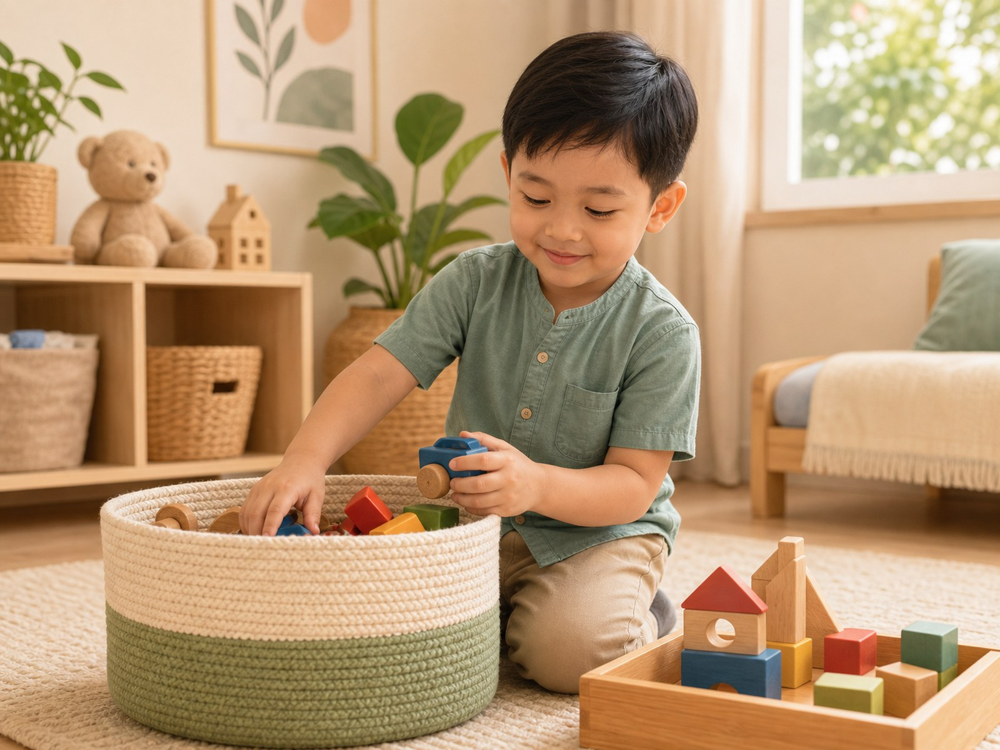
Melatih kebiasaan sederhana agar anak lebih percaya diri dalam aktivitas harian.
Metode
Anak dibantu dengan ritme yang tenang agar proses belajar terasa aman, mudah diikuti, dan tidak membuat anak tertekan.
Kami mengenali kebutuhan, kemampuan, dan kebiasaan belajar anak terlebih dahulu.
Aktivitas disesuaikan dengan kondisi anak agar proses belajar terasa nyaman.
Anak diajak belajar melalui aktivitas yang menyenangkan dan mudah diikuti.
Perkembangan anak dikomunikasikan secara berkala agar orang tua tetap terlibat.
Pendampingan Anak
Setiap anak memiliki cara belajar yang berbeda. Deva Course membantu anak yang membutuhkan pendampingan tambahan dalam belajar, fokus, komunikasi, dan kemandirian.
Catatan: Program akan disesuaikan dengan hasil observasi awal dan perkembangan masing-masing anak.
Galeri
Berbagai aktivitas dirancang untuk membantu anak belajar, bermain, bersosialisasi, dan mengembangkan potensinya secara optimal.
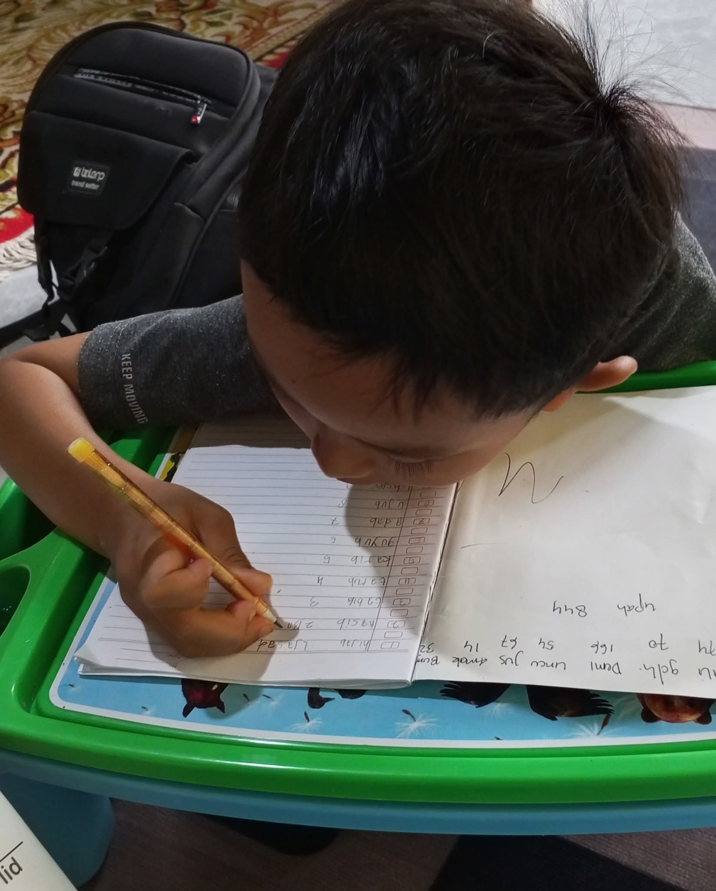
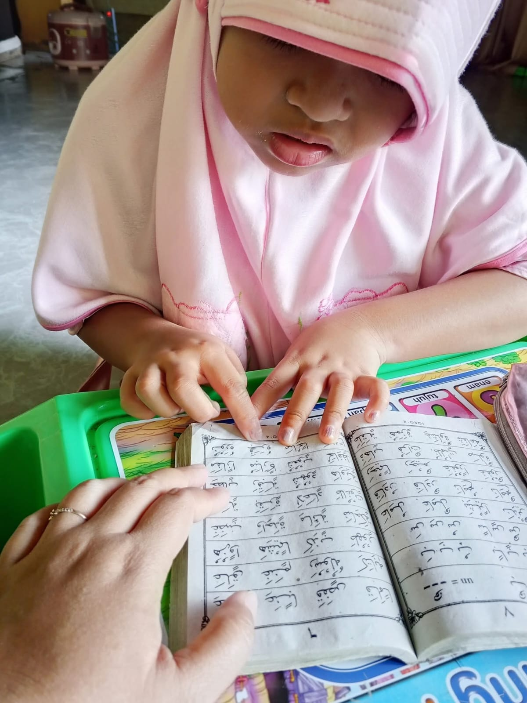
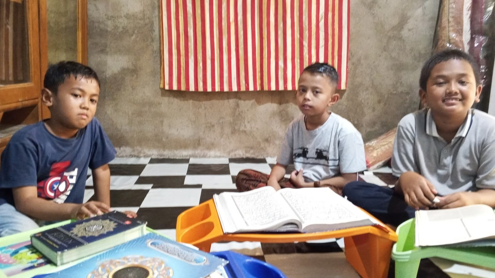
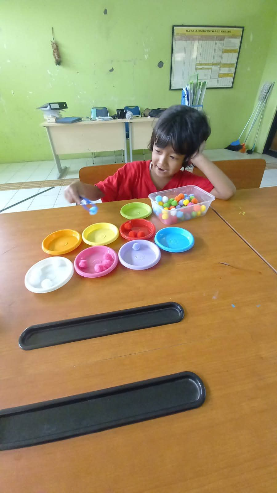
Testimoni
Perkembangan anak tidak selalu besar sekaligus. Langkah kecil yang konsisten tetap sangat berarti bagi anak dan keluarga.
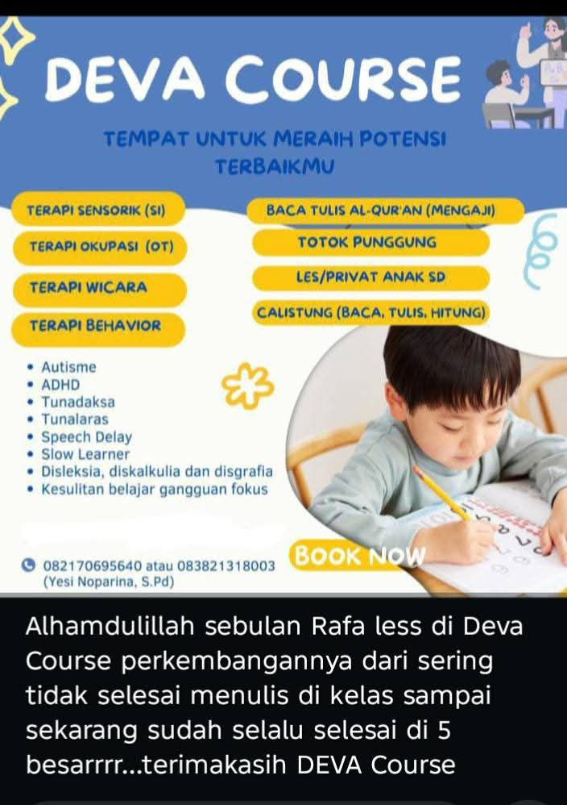
"Alhamdulillah, setelah mengikuti pendampingan di Deva Course, anak kami mulai lebih tenang saat belajar dan lebih percaya diri menyelesaikan tugas."
Orang tua murid Deva Course
Konsultasi
Konsultasikan kebutuhan belajar anak Anda melalui WhatsApp. Tim Deva Course siap membantu setiap hari.
Jam operasional: Senin – Minggu, 08.00 – 20.00 WIB
Kontak
Silakan hubungi kami untuk bertanya jadwal, program, atau kebutuhan pendampingan anak.
Jln Lintas Sumatera
Pasar Usang Cupak
Kabupaten Solok
Sumatera Barat
Senin – Minggu
08.00 – 20.00 WIB
Silakan hubungi kami terlebih dahulu untuk konfirmasi jadwal pendampingan anak.